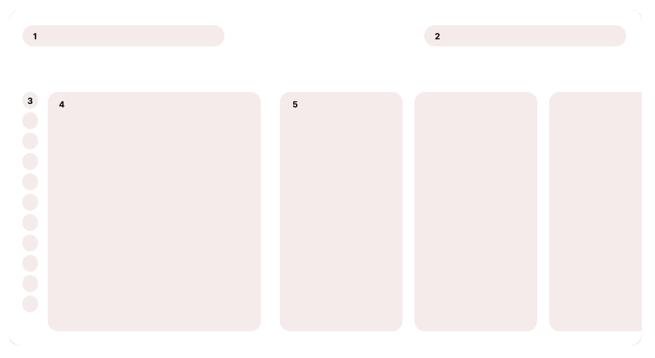
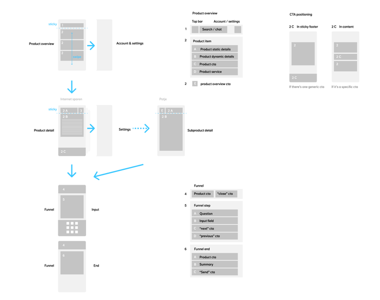

Phase 1: analysis
Most of the interaction design was disjointed.
Take a look at the visualization below. Changing the contents and drilling down on the data in the table is an ongoing task for the airlines’ analysts. Therefore, the method should be intuitive and fast. The analysis, as shown in the visual, is not efficient; on the contrary, it requires the user to move back and forth over the table.

Phase II: analysis
Restructuring
The approach shown above was clearly not going to work. Modals can be used for initial setup, but they are not suitable for overly complex actions. Even if it did work, it would still be preferable to handle these actions locally, allowing you to get what you need immediately.

The tables in FLYR’s interface are quite large and need to be customizable by the user. If customization options are hidden away, they become difficult to find, making table adjustments counterintuitive. When FLYR began adding more data to the tables, such as “year on year” metrics, the design team sought a more straightforward way to adjust the tables. We determined that using a modal was not the solution.
The Test
